Suivant la déclaration de guerre à la Russie le 1er août 1914, le 3 août suivant l’Allemagne fit de même pour la France. Comme tous les Français, s’ensuivit une période de mobilisation s’étendant entre les 2 et 17 août à laquelle Abel Deroch dut répondre comme tous les hommes en âge de combattre. Étant né le 20 novembre 1873, il faisait partie de la classe 1890 ce qui correspond à l’âge de 17 ans.
En étudiant ce document, on observe qu’il s’engagea volontaire pour quatre années à compter du 26 novembre 1891 dans l’Armée française, soit à 18 ans et fut alors affecté au 75è régiment d’infanterie puis à ?.. (Illisible - Drôme) avec le matricule 603.
Au 18 juin 1892, il fut nommé caporal puis sergent le 16 novembre 1894. Enfin, à l’issue de son engagement Abel reçut un certificat de bonne conduite pour être ensuite nommé dans la réserve de l’Armée d’active le 26 novembre 1895 où il y recevra le grade d’adjudant.
Suivant l’ordre de mobilisation, on note qu’au 24 juin 1915 Abel Deroch n’ayant toujours pas rejoint le bureau mobilisateur de Pont Saint Esprit (département du Gard), celui-ci est déclaré insoumis, soit tout de même bientôt une année après la déclaration de guerre, cette mention manuscrite étant réitérée le 6 avril 1919.
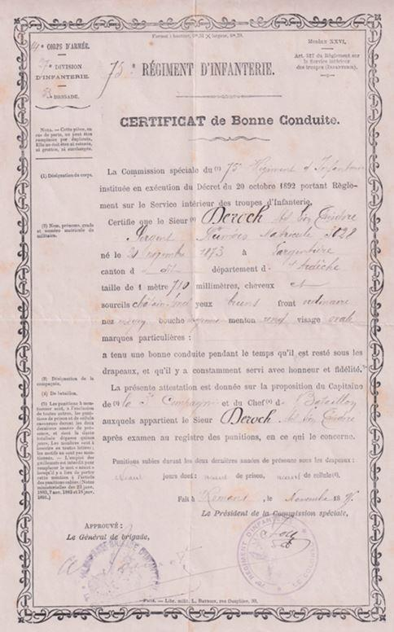Toutefois, dès le 1er mai 1915 Abel Deroch est rayé des contrôles de l’insoumission puis maintenu en sursis jusqu’à nouvel ordre du Ministère de la guerre.
Que se serait-il donc passé ?
Au moment de l’appel sous les drapeaux pour fait de guerre, il atteignait 41 ans et demi, père d’une famille de trois enfants et directeur d’une importante usine française à Moscou ce qui n’est pas à côté de Pont St. Esprit, d’autant que toute liaison ferroviaire avec la capitale russe était interrompue.
En effet, l’Allemagne était en guerre alliée à l’empire Austro-hongrois contre la Russie. On peut donc supposer que la seule voie de rapatriement depuis l’empire pour rejoindre un pays neutre était alors par la mer. Deux possibilités s’offraient : par le Sud via la mer Noire puis la Méditerranée jusqu’à Marseille mais le voyage depuis Moscou aurait été très long et non sans risques à cause des différents pays belligérants, soit par le Nord via le cercle polaire et un pays neutre.
Compte tenu de cela et du passé militaire d’Abel Deroch, on a du mal à imaginer qu’il n’ait pas répondu à cet ordre de mobilisation mais évidemment depuis le consulat de France à Moscou ce qui était logique, suite que l’on retrouve ultérieurement.
Quoi qu’il en soit, il reviendra bien en France puisqu’un document émis par le consulat de France à Petrograd (St. Pétersbourg en langue russe) daté du 9 juin 1915 lui alloue 56 Roubles pour se rendre à Stockholm où il doit se présenter à la légation française.
Cela montre le périple entrepris, pour finir quelque peu similaire à celui que fera la colonie étrangère dont française en Russie pour rapatrier l’Europe de l’Ouest après le déclenchement de la révolution d’octobre/novembre (1) 1917.
Parvenu à Stockholm, il reçoit alors 27 Couronnes danoises et 80 óres du consulat de France pour continuer son voyage.
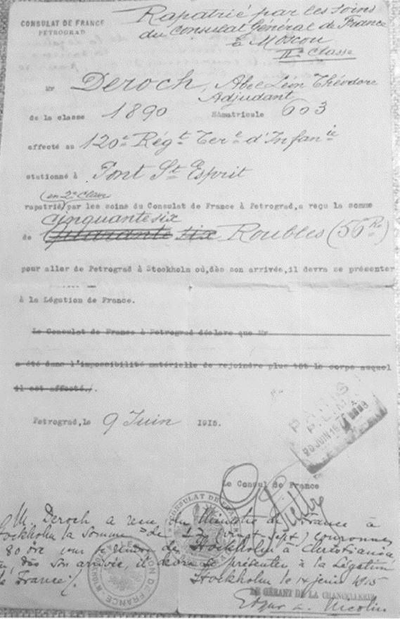Enfin, dans un autre document, cette fois daté du 10 août 1915 édité par le Ministère de la guerre, Abel Deroch voit arriver à Largentière une AUTORISATION DE DEMANDE DE PASSEPORT sur laquelle on note :
²Son absence totale aura duré XXX (rayé) jusqu’à rappel des XXXXXX (rayé) serv. Auxiliaires de sa classe par son bureau de recrutement auquel il fera connaître, à cet effet, son adresse exacte à l’étranger. En outre, dès son arrivée à Moscou il se mettra à la disposition de l’agent consulaire de qui il relève².
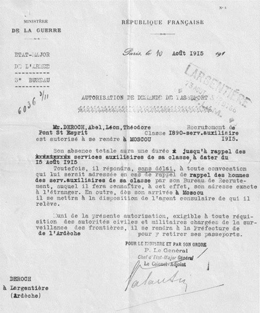Tout montre alors que l’adjudant Abel Deroch n’a jamais manqué à son devoir mais que la difficulté de voyager compte tenu du fait de guerre et sans doute de liaison téléphonique consécutive entre Moscou et Pont St. Esprit n’ont pas joué en sa faveur.
De même, on ne peut que s’interroger quant au fait qu’il soit déclaré insoumis le 24 juin 1915 alors que dès le 9 juin de cette même année le consulat de France à Petrograd lui alloue de l’argent pour revenir en France… De toute manière, sa situation familiale et professionnelle justifiait une telle décision qui sera d’ailleurs confirmée par la commission de réforme du 13 juillet 1919 (date sous réserve), décision entérinée par le Général commandant la région militaire.
Bachelier, ce qui n’était déjà pas rien à cette époque, on peut être surpris qu’Abel Deroch n’ait pas été rapidement promu officier. En réalité, on retrouve une telle situation pour des enseignants ce qui montre qu’il n’y avait pas systématiquement attribution d’un tel grade en fonction du niveau d’étude ce qui d’ailleurs ne changera pas ultérieurement (2). Pour cela, à partir d’un certain niveau d’instruction, il convient d’effectuer l’École militaire des Officiers de Réserve (EOR) et de s’engager ou non pour une période déterminée ce qu’a fait Abel Deroch mais manifestement sans effectuer cette école.
Sans doute, compte tenu de la situation financière de la famille, il fera comme beaucoup : il s’engagera dans l’armée pour une période donnée. Partant de là, il ne pouvait pas être officier ce qui lui a peut-être sauvé la vie car sinon il aurait sans doute été plus difficile de le verser dans la réserve par suite du manque d’effectif de personnels gradés.
Ci-joint, papier militaire de l’adjudant Abel Deroch, par ordre :
- Extrait du CARNET MILITAIRE incluant l’ordre de mobilisation et sa suite.
- CONSULAT DE FRANCE A PETROGRAD.
- Retour en France via Stockholm et attribution d’un dédommagement financier pour le voyage en seconde classe. Pour mémoire, à cette époque pour la partie du voyage en train sur le territoire français, il existait une troisième classe.
- ORDRE DE TRANSPORT émis par le bureau mobilisateur de Pont St. Esprit pour le retour à Moscou, signé par le titulaire.
- MINISTERE DE LA GUERRE. AUTORISATION DE DEMANDE DE PASSEPORT et versement dans le service auxiliaire.
- DECISION DU 22 JUILLET 1915.
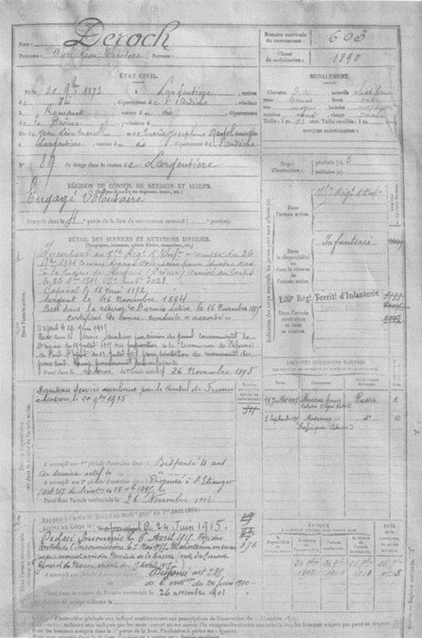
Extrait du CARNET MILITAIRE incluant l’ordre de mobilisation et sa suite
(Doc. MD)
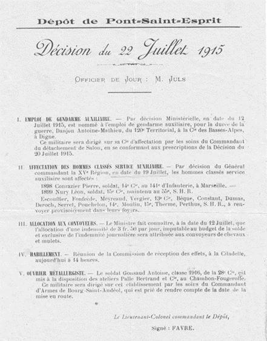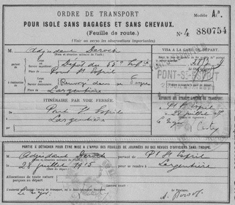
La période révolutionnaire en Russie
La révolution d’octobre 1917 (3) surprit la famille Deroch.
La guerre de 1914-1918 entre l’Allemagne et les alliés Franco-anglais s’accompagna d’une série de défaites et de reculs sur le front russe ou l’armée du Tsar Nicolas II, constituée d’environ 90 % de paysans mal formés au combat, subit près de 900 000 prisonniers et conduisit à l’encerclement de Petrograd où la faim et le froid eurent de lourdes suites parmi la population.
Ces conséquences accélérèrent la décomposition du pouvoir qui vit Nicolas II discrédité et contraint d’abdiquer au profit du Grand-Duc Michel, son frère mais qui refusa le pouvoir au bout d’une journée. À cela s’ajouta la lutte interne entre Mencheviks et Bolcheviks qui créait une situation dangereuse pour les Français de Moscou.
C’est à ce moment-là qu’Abel Deroch et le contremaître Maze, décidèrent qu’il était temps de rentrer en France. La lettre ci-dessous d’Abel Deroch à ses parents à Largentière (non datée), rigoureusement reproduite traduit parfaitement l’ambiance qui régna alors. Il s’agit évidemment ici d’un document exceptionnel car illustrant au plus près ce que fut cet événement qui bouleversera la Russie et bien au-delà pour plus de 80 années. Naturellement, il concerne essentiellement l’activité industrielle mais également et très largement la vie sociale à travers les conséquences de tous ordres que cela entraînera.
L’analyse de cette lettre montre qu’elle daterait de la révolution russe de novembre 1917 et non comme on pourrait le penser des événements de 1905 bien que l’on y voit l’ordre rétabli par l’armée. Elle est déjà très significative des futurs événements qui surviendront ultérieurement.
*
²La grève des chemins de fer, des téléphones, des postes et télégraphes avait commencé à jeter l’inquiétude sur les habitants de Moscou. Je ne parle pas du désordre et de la perturbation des affaires commerciales et de l’anxiété des petits négociants des environs qui avaient des wagons de marchandises se détériorant dans les gares alors que leurs magasins étaient vides.
Vers le 8 décembre la panique commence à se répandre dans le monde ouvrier. Les chemins de fer sont arrêtés le 13 décembre. Il va se passer des choses effrayantes. Tous ceux qui le peuvent feraient bien de quitter la ville.
Lundi 11 décembre
36 de nos ouvrières demandent à prendre leur compte. Comme notre téléphone ne fonctionne pas, ne pouvant prendre sur moi de laisser partir un si grand nombre d’ouvriers, je vais en ville consulter Messieurs (4) les patrons. Ces Messieurs me disent de tacher de les retenir par la persuasion mais de ne pas exiger de quinzaine et de laisser partir celles qui le voudraient absolument. Mes talents oratoires n’ont aucun effet sur nos ouvrières et non seulement ces 36 veulent partir mais le mardi matin nous avons des nouvelles demandes.
En présence de cette situation j’envoie un exprès à ces Messieurs en les priant de venir eux-mêmes à l’usine pour s’expliquer avec leurs ouvriers. Monsieur Henri vient immédiatement et parvient à les rassurer.
Nous continuons à travailler avec 32 (5) ouvrières de moins qui étaient parties le lundi, 4 de celles qui avaient pris leur compte la veille étaient restées.
Mercredi 13 décembre (6)
Le matin, le directeur de chez Mr. Simonod me téléphone que plus de 250 ouvriers ont quitté l’usine pour aller à la campagne. Ceux qui, chez eux sont affiliés aux comités révolutionnaires ayant annoncé qu’il allait se passer des choses terribles.
Il me dit que chez eux nous nous entendrons ultérieurement sur la quantité de crêpes et de mousseline à fournir quotidiennement et qui devra être proportionnée au personnel restant.
Je dois vous dire que depuis près d’un mois nous ne recevons plus ni lettres, ni journaux français, tantôt ce sont les chemins de fer, tantôt la poste. La cause varie mais le résultat est toujours le même.
Entre temps, le gouvernement russe avait résolu d’agir vigoureusement. Dans chaque usine, la police avait fait demander quels étaient les ouvriers suspects. N’ayant à désigner personne nous n’avons pas donné de nom. Un beau soir, on arrêta tous les chefs manquants sur lesquels on put mettre la main. Des perquisitions avaient fait saisir les plans des révolutionnaires ainsi que des dépôts d’armes. En présence de l’action du gouvernement, les comités furent obligés d’agir peut-être plus tôt qu’ils ne l’avaient décidé et sans être complètement prêts.
Les journaux paraissant le mardi 19 décembre avaient annoncé la grève générale pour le mercredi 20 midi.
D’après les journaux, les comités déclaraient qu’il ne serait fait aucun mal aux personnes. Les usines et les marchandises seraient respectées. Les patrons et les chefs d’usines étaient seulement priés d’arrêter tout travail. Les comités avaient porté cela à la connaissance du public, en outre que, les magasins et boutiques à vivres, boulangeries, boucheries, denrées coloniales, etc. devaient rester ouverts. Ceux qui voudraient fermer seraient pillés et démolis. Ils décident en outre de fournir le personnel pour assurer le convoiement des trains de provisions de bouche. Notre téléphone qui avait été arrangé le mardi soir nous permet de rester en communication avec ces Messieurs. Ils nous disent de continuer à travailler. Nous sommes à l’écart dans un bas fond, peut-être serons-nous oubliés. L’usine Alexief qui occupe 1000 ouvriers et qui est à 2 km de chez nous a arrêté le mercredi à midi. L’usine Daniloff 6000 ouvriers continue à travailler, nous voyons les panaches de fumée qui couronnent les cheminées.
Jeudi 21 décembre
Le matin, nous demandons aux ouvrières dont les maris, frères, travaillent aux usines voisines quelles sont les nouvelles.
Elles nous disent que les directeurs de Daniloff ont décidé d’arrêter le travail à midi.
Je passe mon temps à regarder les cheminées qui fument toujours. A 10 h du matin, je téléphone à ces Messieurs leur signalant la situation et les préviens que je leur envoie deux balles de soie. Ils me prient de n’en rien faire. Pour le reste, d’agir suivant les événements. Je téléphone à mes connaissances en ville. Les uns sont arrêtés, les autres le téléphone ne fonctionne pas chez eux. Inutile de vous dire que le travail que nous faisons ne vaut pas le diable. Tout le monde est en l’air. Je préviens nos ouvriers que nous n’arrêterons pas de nous-mêmes mais que, à la première sommation des grévistes nous cesserons immédiatement le travail.
Un peu avant midi le bruit se répand qu’un parti de plusieurs milliers de grévistes s’est présenté à l’usine Daniloff et que les directeurs ont donné l’ordre de cesser le travail. Peu après, je monte à la maison pour dîner et constate que les cheminées ne fument plus.
Nous sommes anxieux. Après dîner on nous prévient que : Alexieff 1000 ouvriers, Daniloff 6000, Miaboff 1000 sont arrêtés et que les grévistes viendront chez nous dans la soirée. Nous reprenons le travail.
Ma femme, qui est seule à la maison va à l’appareil. On lui dit qu’un fort parti de grévistes se dirige vers notre usine. Elle demande qui lui fait cette communication, on refuse de le dire. Nous pensons que c’est la police. Ma femme vient nous prévenir à l’usine. Un quart d’heure après, une ouvrière qui était allée faire des commissions, arrive en courant et nous dit qu’elle ne précède les grévistes que de quelques minutes. Nous travaillons toujours.
A la demie, un ouvrier que nous avions mis en sentinelle sur le lieu le plus élevé de l’usine dégringole en criant : les voilà ! Je monte à son observatoire et aperçoit une nuée de têtes qui s’avance vers nous.
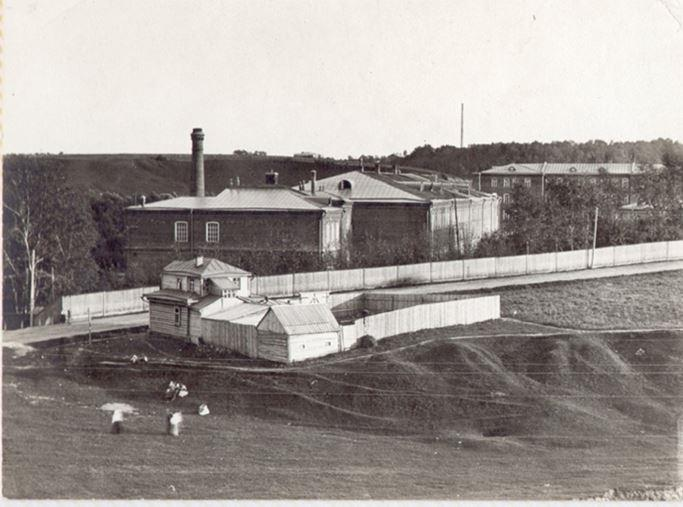
Vue générale de l’usine à Kotly. Doc. MD
Plus tard, nous apprîmes qu’ils avaient fait arrêter tous les ateliers ou petites usines sur leur passage, tirant des coups de révolver sur les fenêtres des usines ou ateliers qui avaient essayé de refuser de les recevoir.
Je dégringole à mon tour et me précipite vers la machine.
Quand faudra-t-il arrêter me demande le mécanicien ? A l’instant !
Nous faisons évacuer nos ateliers et disons aux ouvrières d’aller au dortoir. Comme nous sortons de l’usine après avoir soigneusement fermé les portes, la tête de la colonne est à notre porte et l’avant-garde dans la cour. Il y avait trois groupes. Deux drapeaux rouge et un drapeau tricolore, en tout, un millier de têtes environ. Ils font ouvrir le grand portail et rentrent bannière au vent, en chantant des marseillaises et autres chants révolutionnaires.
Ici se place un incident qui aurait pu, il me paraît, me couter la vie.
Je me préparais à prendre quelques instantanés lorsque les grévistes me sautent dessus en criant que je veux les photographier, ce qui était vrai mais sans arrière pensée. Je suis immédiatement entouré de 100 personnes, les uns criant qu’il faut m’assommer, les plus modérés réclamant la destruction de l’appareil. Sur les trois chefs, l’un ouvrier typographe chez Cettine, voulait qu’on me fasse un mauvais parti mais les deux autres plus âgés disent qu’il suffit de m’enlever l’appareil. Leur avis prévalant, voyant qu’il n’y a rien à faire, je lâche l’appareil et des mains subtiles s’introduisent dans les poches et les vident sans que je m’en aperçoive. Cela fait, on me laisse retirer avec Baptistine qui était venue pour me défendre et qui reçut une paire de coups de coude.
Mon appareil qui coûtait 220 frs. est mis en pièce (7). J’envoie quelqu’un promettre à l’oreille 20 frs. à celui qui me rapportera l’objectif qui vaut à lui seul 130 frs. C’est peine perdue.
J’appris plus tard que des gosses s’en étaient amusés après qu’il eut été détruit. Mon incident réglé, les grévistes demandent où est le personnel. On leur répond qu’il est au dortoir.
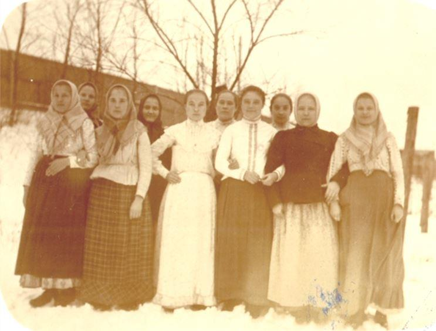
Ouvrières de l’usine. Doc MD
Ils disent qu’il faut faire descendre les ouvrières dans la cour. Une quarantaine de grévistes monte au dortoir et rassurent nos ouvrières mais leur disent qu’il faut descendre dans la cour. Une partie descend et une bataille amicale de boules de neige s’engage. Entre temps, les grévistes font appeler le mécanicien et lui donne leurs instructions. Défense absolue de mettre la machine en marche avant qu’ils le disent. Si, leurs ordres sont enfreints, ils reviendront, casseront et brûleront tout, 1. tueront le mécanicien, 2 les employés. Quelques gréviste veulent faire échapper la vapeur des chaudières mais on leur faire remarquer qu’elle fait besoin pour le chauffage, l’éclairage, les bains, le lavage et la pompe (8). Quelques gréviste se rendent à la chambre des machines, se rendent compte et il est convenu que nous pouvons chauffer pour les besoins du personnel.
Une fois tout bien réglé, après avoir renouvelé leurs menaces en cas de reprise du travail, ils partent en chantant. Ces bandes de grévistes, arrivées près des usines Daniloff furent chargées par un escadron de Cosaques. Il y eut 1 Cosaque tué, 1 Cosaque et un cheval blessés. Les grévistes eurent 4 tués et une dizaine de blessés sérieusement. Il sera question de cet incident plus tard mais je le relate à sa place.
Vendredi 22 décembre
Le matin, nos ouvriers nous font savoir qu’ils désirent savoir si leur appointement est payé et qu’elles sont les mesures que nous comptons prendre pour assurer leur subsistance. Ils sont surexcités et disent que, puisque ces Messieurs les ont empêchés de partir, on doit les payer intégralement jusqu’à Pâques. Après nous être consultés avec ces Messieurs par téléphone, nous leur disons que leur appointement marche toujours jusqu’à nouvel ordre. Nous avons en magasin une grande quantité de pommes de terre, gruau, choux aigres. Le marchand de pain nous a assuré qu’il s’arrangera pour fournir chaque jours 250 kg de pain. Nos ouvriers se rassurent et ne demandent plus rien.
Pour comprendre l’incident suivant, il faut que je vous raconte l’origine des difficultés existant entre notre village et ces Messieurs.
Il y a une douzaine d’années, le terrain où est construit l’usine était inculte et avait une valeur relativement minime, aussi les limites de la propriété avec celles du communal de Kotly étaient assez vaguement déterminées par un ruisseau d’humeur vagabonde et qui, à chaque printemps, modifie son cours. Une fois la fabrique construite, le village de Kotly intenta un procès à ces Messieurs. D’après eux, la limite couperait la fabrique en deux. La chose fut plaidée en son temps devant plusieurs juridictions et ces Messieurs obtinrent gain de cause sur tous les points. Je crois avoir entendu dire qu’un des arguments qui décida le tribunal fut que, les paysans avaient attendu que la fabrique fut construite et en marche pour faire valoir leurs droits.
Dans la soirée de vendredi, on nous dit que les paysans de Kotly, si l’insurrection triomphe, ont décidé de venir démolir et bruler la fabrique.
Si ces Messieurs ont gagné leur procès parce qu’il étaient riches, maintenant c’était aux pauvres à se faire justice eux-mêmes.
Les journées de vendredi et samedi se passèrent dans l’anxiété, il ne fait jour que de 9 h du matin à 3 h du soir. Les veillées sont interminables.
Nous entendons continuellement les boooum du canon, les tacatacatac des mitrailleuses, les rrrrraaaa des salves d’infanterie et cela le jour, la nuit, toujours.
Le samedi soir on dit qu’on a tué plus de 9000 personnes. Ces Messieurs nous disent qu’on a tué deux individus devant leur porte. Qui va être vainqueur ?
Dimanche 24
Les esprits étaient en suspens les nerfs tendus lorsque vers 3 h du soir, les ouvrières revenant de Daniloff disent que les grévistes voulaient venir cette nuit démolir la maison et tuer celui qui avait voulu les photographier.
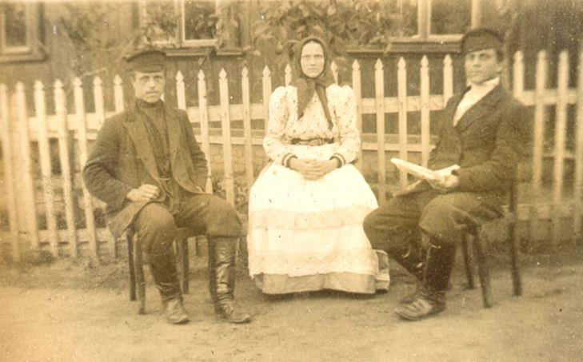
Personnel de l’usine. Doc. MD
Baptistine me cherche en criant, Mr. Maze, contremaître et sa femme prennent peur s’il est possible d’avoir plus peur que nous avions un moment avant.
Le bruit s’enfle en passant de boucle en bouche, maintenant ce sont les deux maisons, la mienne et celle des employés qui doivent être brûlées.
Un moment après c’est l’usine aussi et cela parce qu’il paraît que, lorsque les grévistes sont partis de chez nous, nous avons prévenu les Cosaques (9) par téléphone et nous sommes cause de la mort de quatre de leurs camarades. Nous sommes tous terrorisés. Baptistine demande un cheval à la briqueterie. Mr. Bork, un vieillard de 70 ans lui dit qu’elle a tort de s’effrayer de cette façon et qu’elle est beaucoup plus en sureté dans l’usine qu’à travers champs et surtout par le froid qu’il fait. Baptistine ne veut rien entendre et elle essaye de téléphoner à ces Messieurs mais elle est si énervée qu’elle ne peut pas dire d’une façon convenable 3.20 chiffre du bureau.
Les Maze joignent leurs instances aux siennes et je demande 3.20 comptoir Catoire.
Le veilleur me dit qu’il va appeler un de ces Messieurs qui sont dans la maison chez leur mère. Monsieur Léon arrive. Baptistine et les Maze m’interrompent tellement que nous ne pouvons pas nous comprendre. Furieux, je passe le cornet à Baptistine. Au milieu des cris et des sanglots elle raconte tout ce qu’elle croit et qui lui passe par la tête.
Mr. Léon Catoire lui répond qu’en ce moment on tire le canon dans leur rue, qu’il y a plus de 1000 tués ou blessés dans la ville, qu’il la recevrait avec plaisir chez lui mais qu’il y avait 9 chances sur 10 d’être tué avant d’arriver.
Comme elle abuse un peu trop de la patience de ce Monsieur, je lui lève le cornet et termine la conversation.
Dans la nuit, le téléphone fut retiré au public ce qui fait comme dernières nouvelles de leur usine, ils ont eu celles que Baptistine leur a données.
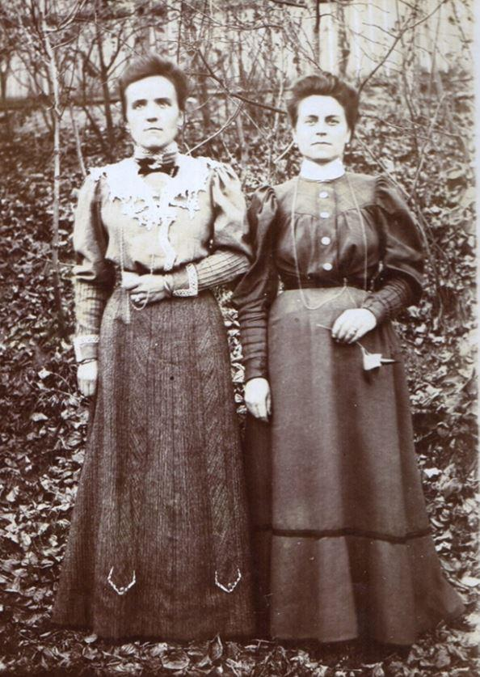
Baptistine à gauche et Mme. Maze. A cette époque, sur les photographies on avait souvent une attitude pour le moins sévère… Doc. MD
Ma femme porte les enfants chez Mr. Maze. Pour rien au monde elle ne veut coucher dans cette maison où nous sommes seuls. Je consens à aller coucher chez Mr. Maze. La mère Anice se met à charrier un tas de choses. Je suis obligé de me fâcher et de n’autoriser plus qu’un voyage.
Après lui en avoir laissé faire encore deux, je la pousse dehors et ferme la maison à clef. Dans la maison des employés, le mécanicien aiguise des haches, des couteaux, transporte deux bombonnes d’acide sulfurique et s’est barricadé une de ses entrées. Sa femme, qui était déjà à moitié morte de peur, s’évanouit à chaque instant devant ces apprêts. Quand il a fini, il vient prendre un café avec nous. D’après lui, il en tuera au moins quinze avant de succomber et il nous raconte comment il fera. Tout cela fait passer le temps.
Nous arrivons à 10 h du soir. A Moscou, on tire avec une intensité effrayante. Drôle de veillée de Noël. Après une dernière ronde, nous nous couchons tous tout habillés. Je dors jusqu’à 4 h du matin. Je m’éveille et vais faire un tour dans la cour. On entend toujours boooum, tacatacatac, rrrrraaaa… On voit les lueurs d’incendies.
Nous apprîmes dans la soirée que c’était la typographie Cettine, immense et magnifique immeuble qui avait coûté dit-on, plus de 1 000 000 de Roubles qui a été brûlé par les soldats parce qu’on avait tiré sur eux des fenêtres de cette maison. C’était chez Cettine ainsi que des usines Procoroff qu’était parti le signal de la grève générale. Le jeune chef gréviste qui était d’idée de m’assommer y était ouvrier typographe.
Lundi 25 décembre
Tout le monde est étonné d‘être encore en vie. Des bruits commencent à arriver que la force armée a le dessus. Les émeutiers, en prévision des événements de ces jours-ci avaient fait signer à tous les ouvriers gagnés à leur cause une déclaration comme quoi ils résisteraient par la force si les chefs du mouvement en donnaient l’ordre. Après avoir signé on avait remis à chacun des armes, soit des bombes, soit des révolvers à 12 coups.
Une grande partie des ouvriers alla à la bataille des premiers jours mais quand ils virent comme ils étaient reçu, la plus grande partie s’enfuit. Les uns louèrent des chevaux et entreprirent, avec leur famille un voyage de plusieurs centaines de kilomètres à travers la neige pour se rendre à leur village. Les autres se terrèrent soit dans leurs dortoirs, soit dans leurs appartements.
Les chefs du mouvement décidèrent de procéder à des visites domiciliaires et à embrigader de force ceux qui avaient manqué à leur parole. Pour retenir les soldats pendant ces opérations, ils construisirent des barricades avec les poteaux du télégraphe, les clôtures des jardins et des fils de fer. Une troupe de grévistes se rendit à l’usine Simonod. Une fois partie, les soldats arrivèrent pour détruire les barricades. Les uns travaillaient tandis que les autres tiraient sur toute personne qui se montrait. Le concierge de l’usine Simonod ainsi que quelques autres personnes ouvrirent la porte pour voir. Une salve tua net le concierge et une balle traversa le mollet d’un employé.
Mardi 26 mars
On tire toujours.
Il paraît qu’hier il est arrivé un manifeste de l’Empereur disant de ne pas ménager les émeutiers et de rétablir l’ordre à tout prix. Il est absolument défendu de stationner dans les rues. À partir de 9 h du soir tout le monde doit rester chez soi. Il paraît que ce sont les étudiants (consignés) qui sont les plus enragés.
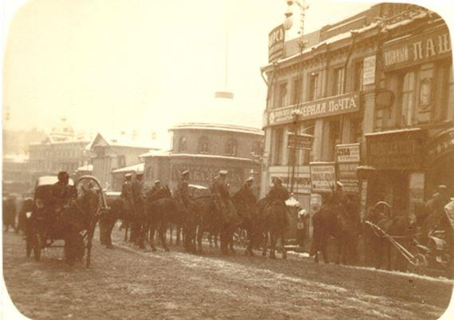
Un contrôle routier à Moscou.
Doc. MD
Les soldats passent, vient une femme, la laisse derrière eux, elle lance une bombe. Il paraît que ces bombes ont la forme et l’aspect d’une orange.
Mercredi 27 avril
Ce matin, Mrs. Catoire me font téléphoner par un de leurs beaux frères, colonel d’état-major qui, en cette qualité a droit de téléphoner.
Nous lui répondons que tout va bien chez nous. Dans la journée, nous apprenons que Daniloff, Miaboff ont repris le travail. Alexieff le reprendra demain matin. Je veux aller voir à Moscou ce qui se passe mais tout le monde s’y oppose, je reste.
Nous apprenons que les soldats sont allés chez Procosoff qui avec Cettine étaient les deux foyers de l’émeute. Nous entendrons tirer toute la semaine dans cette direction.
Chaque soir, d’immenses incendies éclairent l’horizon. Ce soir, un phénomène extraordinaire se produit. Quelle en est la cause ? Je ne sais. Une gerbe de feu étroite longue et plus intense au sommet qu’à sa base s’élance dans le ciel. Je ne saurais mieux la comparer qu’à une immense bougies de plusieurs centaines de mètres de hauteur. Nos ouvriers sont effrayés. Les uns disent que ce sont les âmes des gens tués, etc. Après information, ce phénomène s’est produit par un hangar qui a été brûlé par les ouvriers d’une tannerie parce que leur patron refusait de reprendre le travail.
Vous voyez cela d’ici, d’un côté les bandes rouges de grévistes défendent de travailler sous peine de voir tout détruit, de l’autre les non grévistes bandes noires exigent tout le contraire avec les mêmes menaces.
L’exode vers les campagnes est intense. Toutes les routes sont sillonnées de caravanes. Les uns suivent la voie de chemin de fer en portant leurs paquets sur l’épaule, les autres se sont mis à 10 ou 15 pour louer une charrette qui porte les paquets, eux suivent derrière. Les plus fortunés ont loué des charrettes à 5 ou 6 et tous entreprennent des voyages de 50, 100, 200 km et plus. Il y a 50 cm de neige sur la terre et 10 degrés en dessous de zéro. De chez nous il est parti une cinquantaine d’ouvrières dans ces conditions. Un ménage qui a son village à 200 km a emmené un enfant de 10 mois. Pauvre petit. Les paysans de chez nous ont loué des charrettes à deux chevaux pouvant porter 7 personnes à raison de 6 roubles par personne, soit 42 roubles ou 110 frs. la charrette pour aller à Riazan à 200 km.
Jeudi matin. A 7 h du matin je me lève, déjeune copieusement et vais aux écuries faire atteler un cheval. Quand tout est prêt, je file à Moscou. En route, je rencontre quelques patrouilles. Je frémis d’horreur en passant devant la typographie Cettine.
Il ne reste que les murs. Je passe au Kremlin, traverse Tverskoy, la place Strasnoy et arrive chez Mr. Henri qui est tout surpris de me voir. Chacun raconte ses émotions et nous allons au bureau pour chercher de l’argent pour l’usine. En passant, il me fait remarquer à l’extérieur, entre les fenêtres de son salon une écorchure au mur. C’est une balle de fusil qui l’a faite.
D’après les renseignements que je lui donne, nous décidons que dès mon arrivée à l’usine, le mécanicien allumera ses foyers et que nous reprendrons le travail dès que la pression sera suffisante. Je le quitte, vais faire le marché d’Okhotny Ryad.
Depuis deux ou trois jours nous vivons de poulets et de confiture. Je passe chez Mr. Simonod. En route, je vois les éraflures des balles, les poteaux de télégraphe, de bec de gaz, les clôtures qui ont servi à faire des barricades. Tout cela fait lamentable, entortillé de fil de fer, du sang partout, je raconte de nouveau nos aventures. Ces Messieurs me racontent les leurs.
On me fait voir où et comment le portier a été tué.
Ces Messieurs me disent qu’ils ne reprendront probablement pas le travail avant Pâques car on s’attend encore à deux émeutes, l’une le 9 janvier pour l’anniversaire des massacres de St. Petersbourg, l’autre à la fonte des neiges.
Cette seconde, d’après ce que l’on dit serait terrible.
Ce sont les paysans qui dit-on, veulent s’emparer des terres et se les partager à raison de 6 déciatines (10), soit 6 hectares par tête d’homme valide. Cette question agraire est un peu confuse pour moi. J’arrive à l’usine et nous reprenons le travail sans incident.
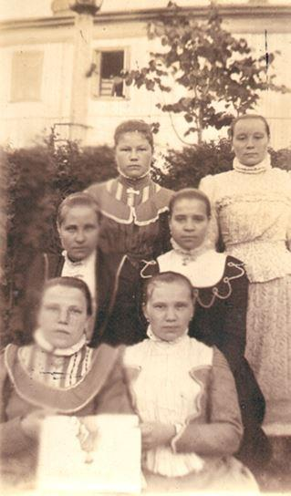
Personnel de l’usine. Noter la richesse des vêtements.
Doc. MD
Vendredi 29 décembre.
On tire toujours chez Procoroff. Samedi de même. Dimanche matin je termine ma lettre.
On m’apprend qu’on a tout cassé et tout détruit chez Procoroff. Je vais aller en ville aux nouvelles. Je mettrai votre lettre à la poste en passant².
***
J-M. T.
1. Novembre suivant le calendrier julien utilisé en Russie.
2. Par Jean-Marc TRUCHET : LES CARNET DE René CLERGEAU - La Grande guerre au jour le jour. 1914-1918
3. En réalité, à cette époque en Russie on utilisait le calendrier Julien qui retardait de 13 jours sur le calendrier Grégorien en usage en Europe de l’Ouest. Autrement dit, la révolution d’octobre s’est déroulée en novembre suivant la datation russe.
4. Les propriétaires de l’usine, c’est-à-dire la famille Catoire.
5. Valeur donnée sous réserve car dans cette lettre il est difficile d’identifier certains chiffres dont les 5 et les 9.
6. Les dates sont à considérer avec prudence par suite de la difficulté de lecture des chiffres.
7. Soit 877 € au 31 décembre 2019.
8. Il s’agit de machines à vapeur qui, à l’époque, fournissaient la force motrice pour les ateliers mais également le chauffage des locaux par prélèvement d’une partie de la vapeur produite, disposition indispensable en Russie. On constate ici le modernisme de l’usine, déjà éclairée à l’électricité et qui comporte divers accessoires, tels que pompes et autres.
9. Suivant certains documents, il y avait un casernement à Kotly.
Partager cette page